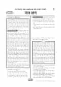

문제지

2027학년도 9월 모의평가 · 2026년 9월 시행
2027학년도 9모 국어 화법과작문 1등급컷은 원점수 90점(추정), 표준점수 최고점은 144점입니다.
원점수 1등급컷은 공식 발표값이 아니라 EBSi·입시기관 값입니다. 등급별 값은 등급컷 표, 출처 구분은 데이터 원칙에 있습니다.

시험지를 먼저 풀어 보세요. 등급컷·표준점수·난이도는 흐리게 가려 뒀어요.
| 등급 | 원점수 | 표준점수 | 누적 |
|---|---|---|---|
| 1 | 90 | 131 | 4.16% |
| 2 | 83 | 124 | 12.09% |
| 3 | 75 | 117 | 23.68% |
| 4 | 66 | 108 | 40.53% |
| 5 | 53 | 96 | 61.13% |
| 6 | 40 | 83 | 77.81% |
| 7 | 27 | 71 | 89.14% |
| 8 | 21 | 65 | 96.63% |
등급별 컷 · 공식 표준점수 컷 기준 입시기관 추정 종합 · 만점 100점
정답 변경 없음
이의신청 14문항
시험 전체 관련 보도 4건은 2027학년도 9월 모의평가 회차 페이지에 모아 두었어요.
국어 영역 전체 응시자 기준입니다. 한국교육과정평가원이 교육부 보도자료로 공개한 표준점수 도수분포로 계산했습니다.
EBSi 응답자 기준으로 가장 많이 틀린 문항은 13번(3점)이고, 오답률은 85%입니다. 상위 15문항 중 3문항은 정답보다 한 오답을 고른 사람이 더 많았습니다(13번: 정답 ① 15%, ④ 29.2%). 오답률 50%를 넘은 문항은 6개입니다.
| 순위 | 문항 | 배점 | 오답률 | 정답 | 많이 고른 오답 |
|---|---|---|---|---|---|
| 1 | 13번 | 3점 | 85% | ① | ④ 29.2% |
| 2 | 7번 | 2점 | 73.8% | ① | ② 25.1% |
| 3 | 37번 | 2점 | 73.3% | ⑤ | ④ 64% |
| 4 | 23번 | 2점 | 69.8% | ① | ④ 39.4% |
| 5 | 45번 | 3점 | 63.1% | ⑤ | ③ 28.6% |
| 6 | 24번 | 3점 | 58.6% | ② | ⑤ 24.1% |
| 7 | 8번 | 3점 | 49.7% | ③ | ④ 16.5% |
| 8 | 10번 | 2점 | 49.3% | ② | ⑤ 17.8% |
| 9 | 16번 | 3점 | 48.8% | ④ | ③ 19.5% |
| 10 | 12번 | 2점 | 48.8% | ③ | ⑤ 16.9% |
| 11 | 15번 | 2점 | 45.5% | ③ | ① 17% |
| 12 | 19번 | 2점 | 45.3% | ⑤ | ④ 19.2% |
| 13 | 11번 | 2점 | 43.5% | ⑤ | ③ 16.6% |
| 14 | 27번 | 2점 | 43.1% | ① | ⑤ 22.1% |
| 15 | 20번 | 2점 | 42.5% | ④ | ② 24.7% |
EBSi 가채점 응답자 기준 · 전 문항 중 오답률 상위 15문항
출처: EBSi 역대 등급컷·오답률 공개 화면. 가채점에 참여한 EBSi 이용자 응답이라 전체 응시자 정답률과는 다를 수 있습니다.
발행 기관: 한국교육과정평가원(KICE). 파일 위치: 이 사이트가 보관한 사본. 저작권은 발행 기관에 있습니다. 원본과 다르거나 게시 중단이 필요하면 연락처로 알려 주세요. 등급컷 출처 구분은 데이터 원칙에서 설명합니다.
막대 색은 역대 대비 난이도 · 진한 막대가 이 시험 · 막대를 누르면 그 회차로 이동
공통과목 독서는 네 세트였습니다. 1~3번은 전기류(전기문·자서전)를 활용한 진로 독서 방법을 다룬 독서론, 4~9번은 (가) 종 차별주의와 다른 종의 도덕적 지위, (나) 고도의 인공 지능을 도덕적 행위자로 볼 수 있는지를 다루는 윤리적 행동주의를 묶은 주제 통합형 인문 지문입니다. 10~13번은 220V 교류를 소형 기기용 직류로 바꾸는 어댑터의 선형 방식과 스위칭 방식을 비교한 기술 지문, 14~17번은 라자스펠트의 연구에서 출발한 오피니언 리더와 커뮤니케이션 2단계 유통 이론을 다룬 사회 지문입니다. 이 중 종 차별주의 지문은 EBS 수능특강 독서와 연계되었습니다.
가장 많이 틀린 문항은 기술 지문의 13번(3점)으로, EBSi 가채점 응답자의 85%가 틀렸습니다. 220V·60Hz 전원, 100kHz 온·오프 신호, 5V 기준 전압 같은 구체적 수치를 주고 스위칭 방식의 작동 원리를 실제 상황에 적용하게 한 문항입니다. EBS는 13번과 함께 종 차별주의 지문의 인격체 개념을 새 사례에 적용하는 8번을 까다로운 독서 문항으로 꼽았습니다. 화법과 작문·언어와 매체 응시자 모두 13번이 오답률 1위였다는 점에서, 선택과목과 관계없이 공통 독서가 변별을 맡았다는 것을 알 수 있습니다.
문학은 고전소설 작자 미상 「금환기봉」(18~21번), 장옥관 「가오리 날아오르다」·김혜순 「잘 익은 사과」와 박지원의 산문 「공작관문고 자서」를 묶은 복합 세트(22~27번), 박화성의 현대소설 「고향 없는 사람들」(28~31번), 이진유의 유배 가사 「속사미인곡」(32~34번)이 출제되었습니다. 「금환기봉」·「잘 익은 사과」·「속사미인곡」은 EBS 수능특강 수록작이고, 「가오리 날아오르다」·「공작관문고 자서」·「고향 없는 사람들」은 비연계였습니다.
「금환기봉」은 남장을 하고 과거에 나서는 장 소저가 등장하는 여성 영웅 서사이고, 「고향 없는 사람들」은 고향을 떠나야 하는 인물들 사이에 오가는 편지가 서사를 움직이는 작품이라 편지의 서사적 기능을 묻는 문항이 나왔습니다. EBS는 시구 감상의 적절성을 묻는 24번과 31번을 까다로운 문학 문항으로 꼽았습니다.
선택과목 화법과 작문은 해양 유물의 발굴과 보존 처리를 다룬 학예 연구사의 강연(35~37번), 동아리가 축제 때 운영한 수리 배움터를 교지에 소개하기 위한 대화와 초고(38~42번), 지역신문의 역할을 다룬 청소년 독자 위원의 기고문 초고(43~45번)로 구성되었습니다. 기고문은 주민 의견 수렴 없이 진행되던 해안 도로 전봇대 설치 사업이 지역신문 보도로 중단된 사례에서 출발합니다.
화법과 작문 응시자에게도 오답률 1위는 공통 독서 13번이었고, 오답률 50%를 넘은 문항은 6개였습니다. 선택과목 자체보다 공통과목에서 점수가 갈린 시험이었다는 뜻입니다.
10~13번 어댑터 지문은 변압기·정류기·평활 회로·정전압 소자로 이어지는 흐름을 직접 그림으로 그려 보며 다시 읽어 보는 것을 권합니다. 8번처럼 지문의 개념을 새 사례에 적용하는 문항은 따로 모아 두면 수능 직전 점검용으로 좋습니다. 문학은 비연계 작품 세 편을 처음 보는 작품이라고 생각하고 시간을 재며 다시 풀어 보면, 수능에서 낯선 작품을 만났을 때의 대응을 연습할 수 있습니다.